01 · D1 normalNúcleo + entorno; sin overlays
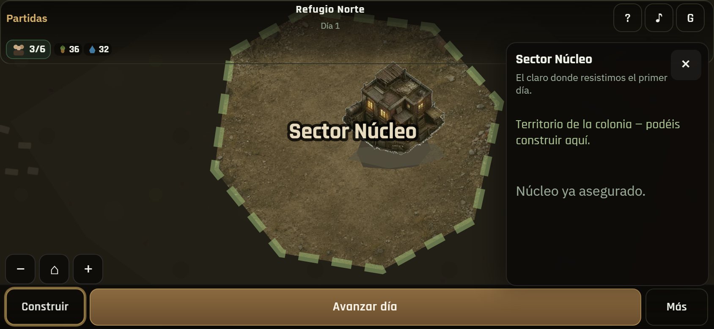
02 · Sector NúcleoLectura del núcleo
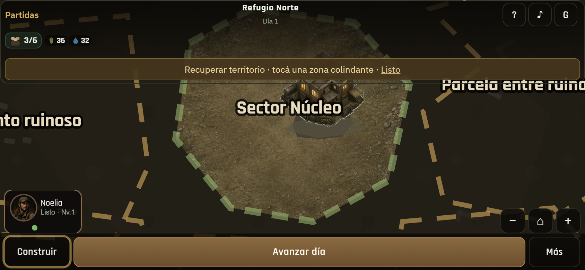
03 · Modo expansiónNo caben todos los sectores a la vez
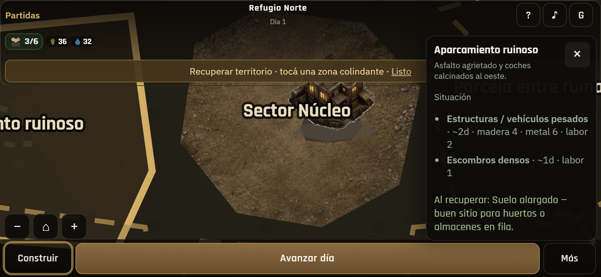
04 · Sector + requisitosAparcamiento / componentes
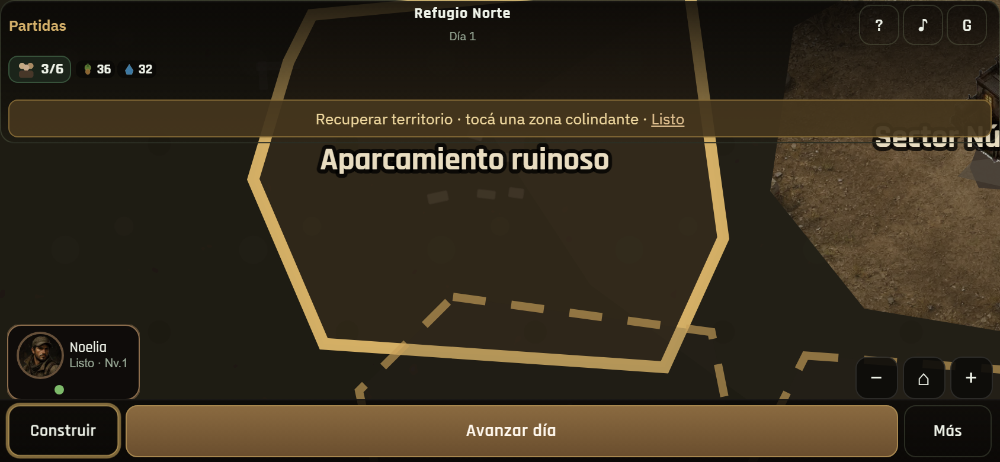
05 · Pan oesteEl mundo continúa fuera del viewport
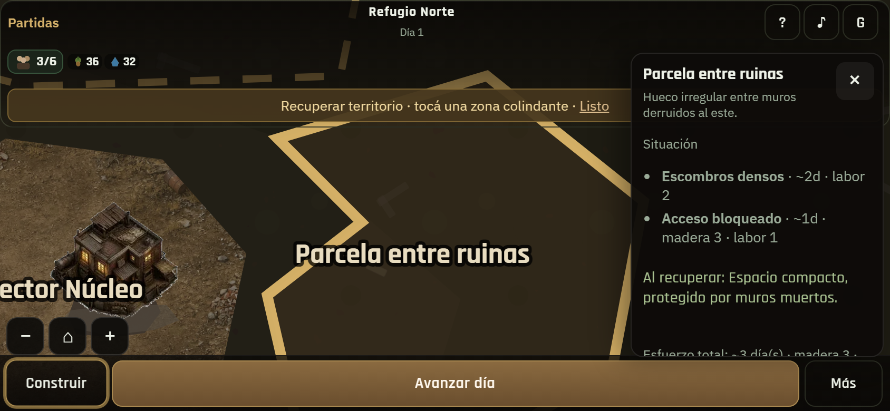
06 · Pan esteOtra geometría (ruinas)
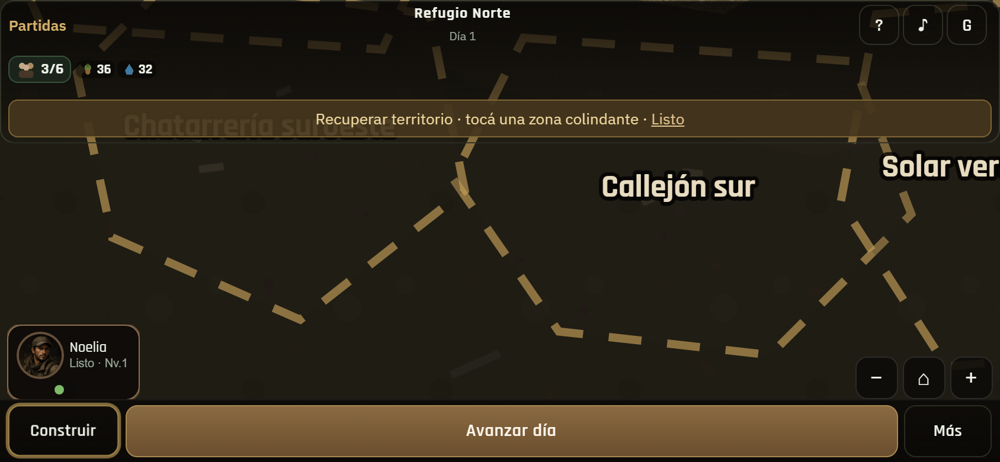
07 · Pan sur/diagonalCallejón / scrap fuera del centro
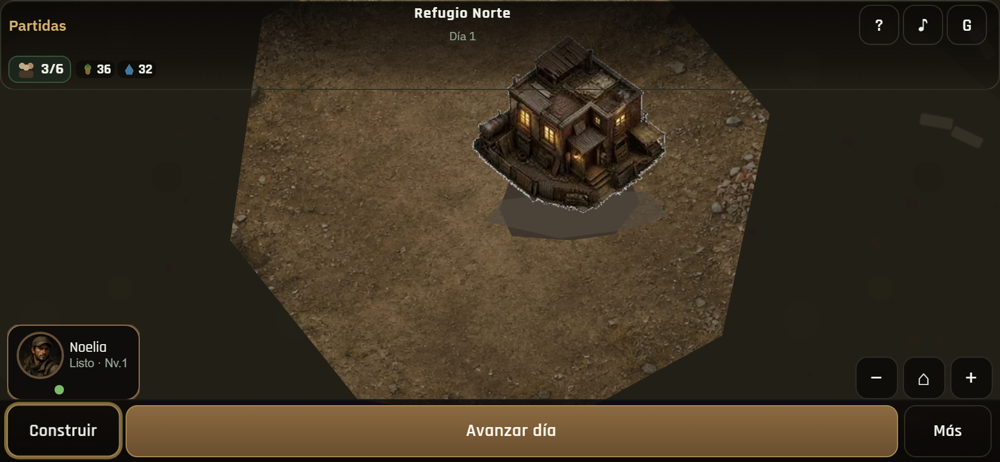
08 · Zoom cercanoEdificios legibles; no empequeñecidos
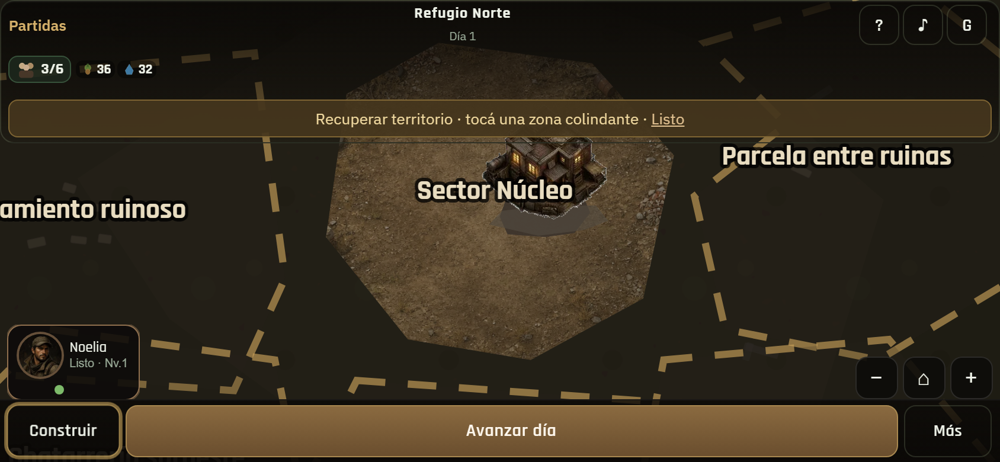
09 · Zoom alejadoLectura más global (sigue > viewport)
10 · RecentrarVuelve al Núcleo/HQ
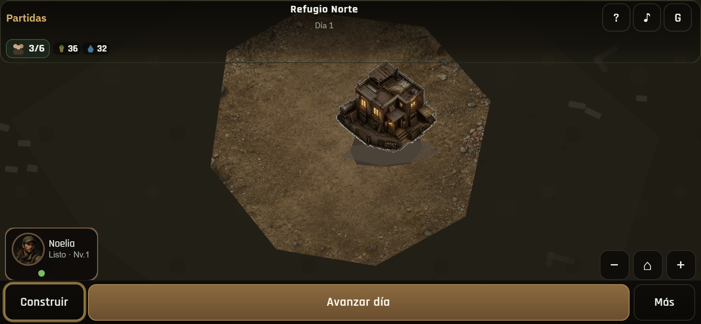
11 · 844×390Composición landscape
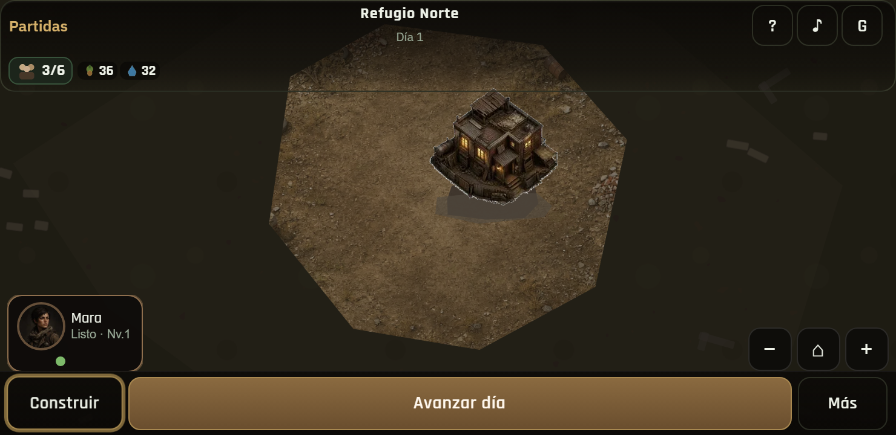
12 · 740×360Manejable sin empequeñecer el mundo
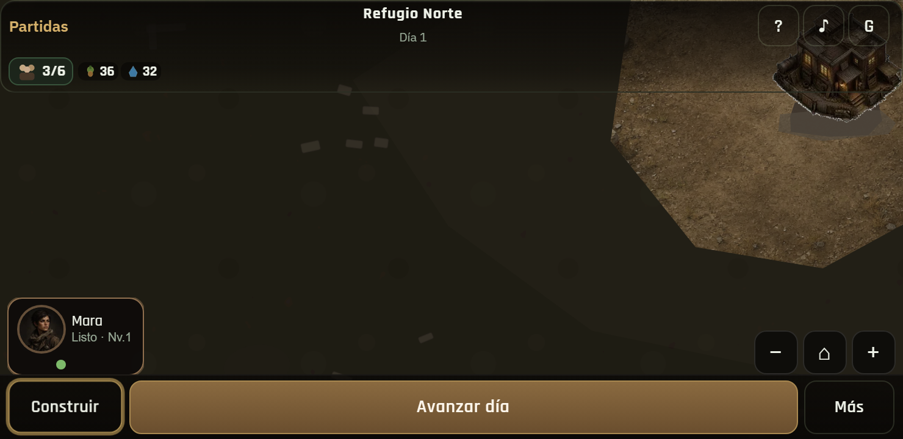
13 · 740×360 panMismo mundo, cámara desplazada
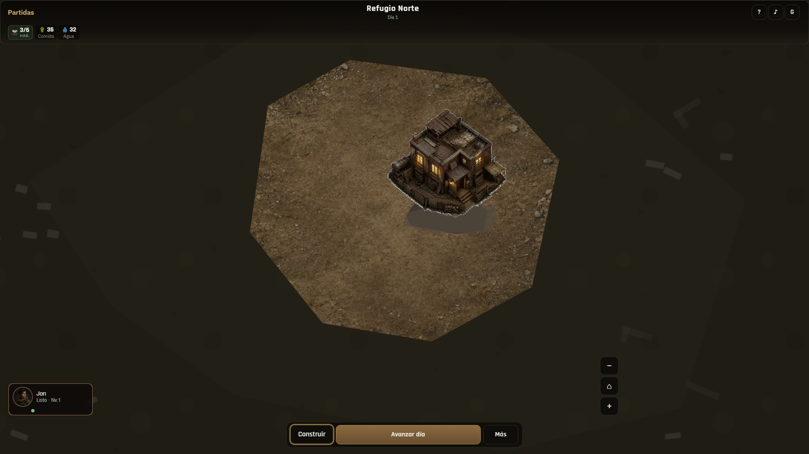
14 · Desktop normalSin overlays
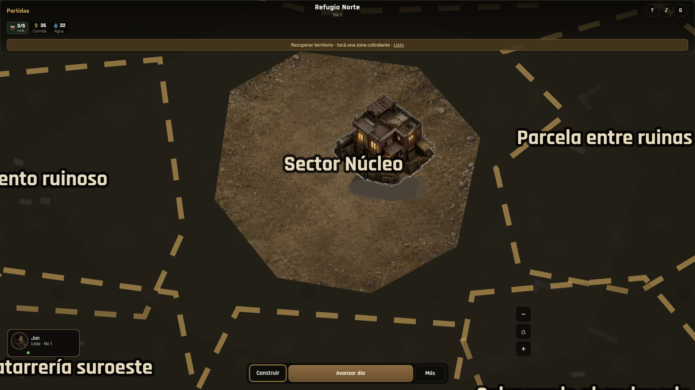
15 · Desktop expansiónSectores orgánicos